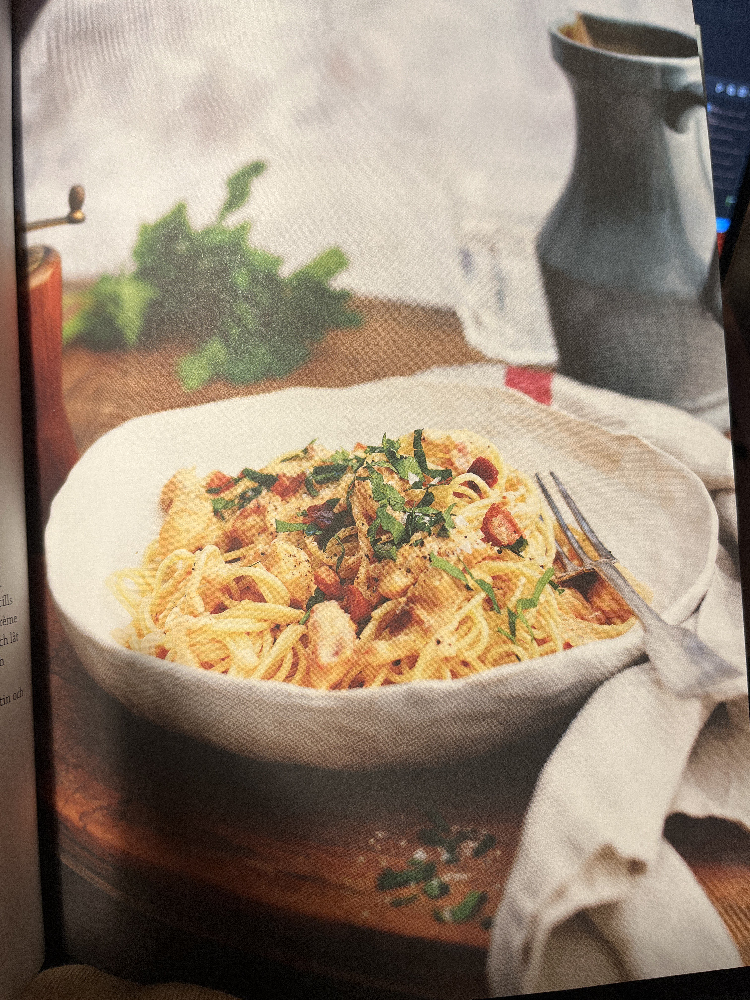

- 400g Spaghetti
- 140g Bacon
- 500g Kycklingfilé
- 4 dl Crème Fraiche
- 1 dl Vispgrädde
- 2 msk Koncentrerad Kycklingfond
- 2 msk Chilisås
- Salt
- Svartpeppar
Du behöver:
Spaghetti med Kyckling- & Baconsås
(4 portioner)
1. Koka spaghettin
2. Skär bacon i bitar och knaperstek i en stekpanna
3. Strimla kycklingköttet och fräs i smör tills det är genomstekt
4. Sänk värmen och tillsätt crème fraiche, grädde, fond och chilisås
5. Koka upp och låt sjuda i några minuter. Smaka av med salt och peppar
6. Servera med spaghettin
Källa: Middagstipset (s.38)